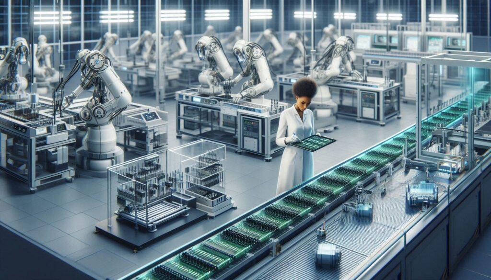
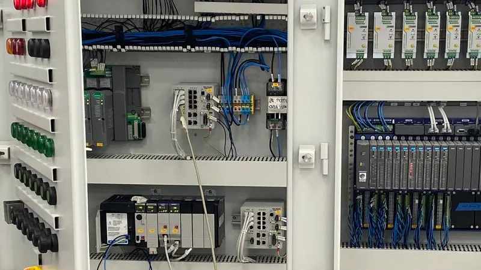
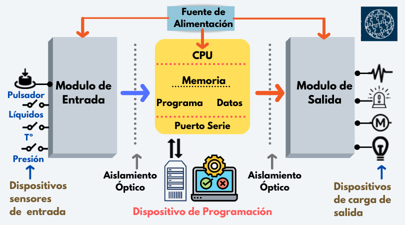

¿Qué es?
El control industrial se encarga de regular y supervisar procesos mediante sistemas como PLCs, controladores PID y redes de sensores.
¿Qué se aprende?
- Principios de control automático y retroalimentación.
- Diseño de controladores PID (Proporcional, Integral, Derivativo).
- Simulación y análisis de sistemas dinámicos.
- Uso de herramientas como MATLAB y Simulink para modelado y simulación.
¿Dónde se aplica?
El control industrial es esencial en áreas como la robótica, la automatización de procesos químicos, el control de temperatura y presión, los sistemas eléctricos de potencia, y la gestión de energía. Permite mantener las variables de los sistemas dentro de rangos deseados, aumentando la eficiencia y reduciendo riesgos.
Habilidades desarrolladas
- Capacidad para modelar matemáticamente sistemas físicos.
- Conocimientos en electrónica de control y sistemas embebidos.
- Habilidad para diseñar e implementar estrategias de control avanzadas.
Importancia
Permite mantener la calidad, seguridad y eficiencia de los procesos productivos, reduciendo errores humanos.
Galeria de Control Industrial


